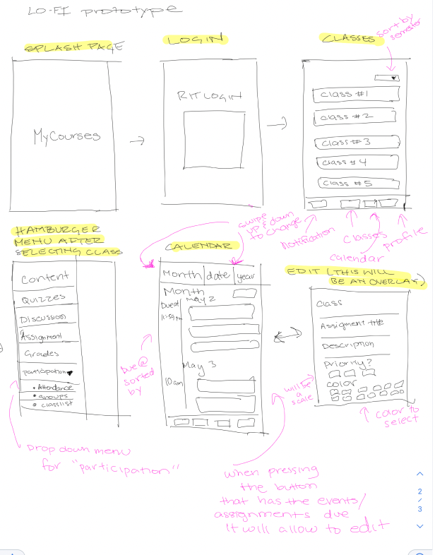

Prototype Plan
- A Splash page
- Login/sign up information. Users can login with their school account server (e.g., MyCourses, Blackboard, etc.)
- User selects which class syllabus they would like to sync. The classes would display as a list.
If the Sync is successful, user can view their syllabus on personal calendar, can edit colors, share with people and more.
- A parsing software (Docparser)
- If the syllabus only contains weeks for the assignments, users will be prompted with a pop up to choose a desired date for that assignment
- To achieve accessibility, Users can select their own display mode. Options would be “default” which will use the colors that are non-accessible, and “accessible” which will display colors that are accesbile and have accessible UI.
Lo-Fi Prototype
